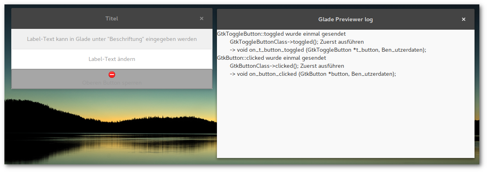

Durchzug
Fenster und Dialoge
Glade
Mit Glade lassen sich verschiedene Fensterarten und Dialoge erstellen. Im Beispiel hat das Hauptfenster zwei Buttons, ein Button öffnet ein Info-Fenster, der andere schließt es und öffnet ein anderes Fenster, das jeweils das gleiche tut.

Push the button
Buttons und Labels
Glade
Ausgehend vom letzten Beispiel werden nun ein paar Elemente hinzugefügt, ein Label, ein Button und ein Togglebutton. Jedes Anzeigen- oder Steuerungselement benötigt je ein Container. In diesem Beispiel werden vertikale Boxen angelegt, diese lassen sic hjederzeit erweitern, es ist auch möglich, Container ineinander zu verschachteln.
Den Elementen Button und Togglebutton wird auf clicked bzw. toggled ein Signal zugewiesen. Label dient nur der Anzeige von Text, hier wird kein Signal benötigt.
In der Vorschauansicht kann man testen, ob die korrekte Reaktion ausgelöst wird.
{kind=link}
Fenster mit Aussicht
Inhalt
Minimalbeispiel
Glade
Nach dem Start präsentiert sich Glade dreigeteilt, links ist die Fenster-/Widget-Auswahl, in der Mitte die Projektansicht und rechts eine Baumansicht des Projekts, im unteren Bereich können Eigenschaften und Signale editiert werden.
Nun erstellt man ein Fenster und gibt ihm eine Kennung. Mit dieser Kennung wird das Objekt im Programmcode angesprochen.

Tutorial-Reihe zu Glade
Intro
Bei der Erstellung der grafischen Oberfläche für gpt habe ich auf Glade zurückgegriffen, einem grafischen Werkzeug, mit dem man relativ einfach GTK+-Oberflächen erstellen kann.
Mit Glade erstellte Projektdateien sind GtkBuilder-XML-Dateien, die Verbindung zum eigentlichen Programm erfolgt über Signale, dabei werden zahlreiche Programmiersprachen unterstützt. Hier werde ich Python verwenden.
Da es in den letzten Jahren Versionssprünge sowohl bei Python als auch GTK+ gegeben hat (jeweils von 2.x auf 3.x), gibt es viele Dokumentationen und Tutorials, die nicht 1:1 anwendbar sind, d.h. die Funktionen sind meist gleich, nur die Syntax unterscheidet sich minimal (siehe Links).
An dieser Stelle versuche ich aktuell zu bleiben, derzeit mit Python 3.5.2 und Glade 3.20.0.
Nicht exklusiv
GTK+-Elemente können natürlich auch ohne Glade direkt im Quellcode des Programms erstellt werden. Es ist möglich, beide Optionen parallel zu verwenden oder auch im Verlauf das eine gegen das andere zu ersetzen.
Links
- The Python GTK+ 3 Tutorial - Grundlagen der Programmierung von GTK+-GUI mit Python
- Creating a GUI using PyGTK and Glade - Grundlagentutorial für PyGTK (Python 2.x)
- Programmieren mit Python und Glade - umfangreiches Tutorial auf Deutsch
- Python GObject Introspection API Reference - vollständige Dokumentation des GI-Moduls
Themen
- In Arbeit:
- TreeStore
- Medien und GStreamer
- Textfelder mit GtkTextView und GtkSourceView
- Interaktion mit anderen Anwendungen mit und ohne Threading
Es begann ganz harmlos
GoPros sind aufmerksamkeitsheischende Zeitfresser.
Man versucht sie an schöne Orte zu führen, man produziert dabei Unmengen an Daten, die man dann in mehr oder weniger aufopferungsvoller Arbeit im Videoeditor möglichst ansehnlich zurecht schneidet.
Wenn man ganz schlau sein möchte, schreibt man ein paar Skripte, die einem etwas Arbeit abnehmen.
Und dann schreibt man eine kleine textbasierte UI, um das etwas abzurunden.
Und dann erwischt man sich dabei, eine graphische Oberfläche zusammen zu zimmern.
Und dann schreibt man das in ein Blog...